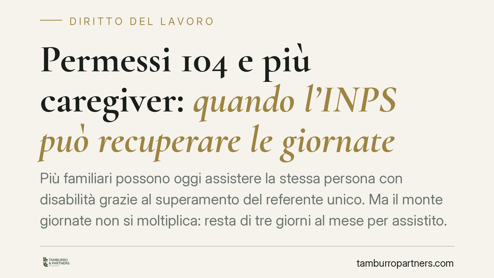

Permessi 104 e più caregiver: quando l'INPS può recuperare le giornate
Più familiari possono oggi assistere la stessa persona con disabilità grazie al superamento del referente unico. Ma il monte giornate non si moltiplica: resta di tre giorni al mese per assistito. Quando la fruizione supera quel limite, o si sovrappone nello stesso giorno, l'INPS può contestare le giornate eccedenti e recuperarle. Vediamo cosa cambia in concreto per lavoratori e datori.

Il quadro: più caregiver, stesso tetto di giornate
Dall'entrata in vigore del D.lgs. 105/2022 è stato eliminato il cosiddetto "referente unico", ossia la regola che consentiva a un solo lavoratore di fruire dei permessi retribuiti per assistere una determinata persona con disabilità grave (art. 33, comma 3, L. 104/1992).
Attenzione però al punto decisivo: il superamento del referente unico amplia la platea di chi può fruire dei permessi, ma non aumenta il numero complessivo di giornate. Più lavoratori possono oggi alternarsi nell'assistenza, fermo restando il tetto di tre giorni al mese per ogni assistito. È questa la fonte dei problemi applicativi che oggi emergono.
Inquadramento normativo
La cornice resta l'art. 33, comma 3, della L. 104/1992, come modificato dal D.lgs. 105/2022, che ha recepito la Direttiva UE 2019/1158 in materia di conciliazione tra vita professionale e vita familiare.
Sul piano operativo, il funzionamento economico dei permessi segue lo schema dell'anticipo e conguaglio: il datore di lavoro anticipa l'indennità al lavoratore e la recupera successivamente in sede di conguaglio con i contributi dovuti all'INPS. Quando le giornate fruite eccedono il limite consentito, l'indennità risulta indebitamente erogata e l'ente previdenziale può procedere al recupero.
Nota di prudenza. Alla data di redazione di questo contributo circolano indicazioni riferite a un intervento di prassi INPS in materia di recupero delle giornate fruite da più caregiver. Prima di assumere decisioni basate su un singolo documento di prassi, consigliamo di verificarne numero, data e oggetto ufficiale sul portale istituzionale dell'INPS o presso la sede competente, poiché gli estremi esatti incidono direttamente sulla correttezza delle scelte operative.
I due nodi critici del recupero
Quando più caregiver assistono la stessa persona, due situazioni tipiche possono generare un'eccedenza rispetto al tetto mensile.
Primo caso: superamento complessivo del tetto. Se i vari lavoratori, sommando le giornate fruite, oltrepassano i tre giorni al mese per assistito, l'eccedenza è indebita. In questi casi si applica un criterio di ordine temporale: le giornate legittime sono quelle fruite fino al raggiungimento del limite, mentre quelle successive nel tempo risultano eccedenti e potenzialmente soggette a recupero. Tre giorni restano tre giorni, comunque li si ripartisca.
Secondo caso: fruizione contemporanea. Se due caregiver fruiscono del permesso nello stesso giorno per lo stesso assistito, si pone il tema della duplicazione dell'indennità a fronte di un'unica giornata di assistenza dovuta. Su questo punto l'orientamento previdenziale tende a considerare non pienamente giustificata la doppia erogazione. Trattandosi di un profilo delicato, va verificato sul testo esatto della prassi applicabile prima di quantificare eventuali importi.
Implicazioni pratiche
Per il lavoratore, il rischio concreto è la richiesta di restituzione dell'indennità relativa alle giornate eccedenti, con possibili ricadute anche sui rapporti con il datore.
Per il datore di lavoro, che anticipa l'indennità, il tema è la corretta gestione del conguaglio: giornate non spettanti possono tradursi in importi non recuperabili verso l'INPS e in un conseguente onere di rettifica.
In entrambi i casi, la chiave è il coordinamento tra i caregiver che assistono la stessa persona. Poiché il monte è unico e condiviso, la pianificazione non è un dettaglio ma la condizione per evitare contestazioni.
Cosa fare in concreto
- Coordinate la fruizione tra i caregiver: individuate chi utilizza le giornate e in quali date, tenendo un prospetto condiviso mese per mese per non superare il tetto di tre giorni per assistito.
- Evitate le sovrapposizioni: non programmate lo stesso giorno di permesso per due lavoratori diversi in favore della stessa persona, salvo verifica di una specifica copertura normativa.
- Conservate la documentazione: domande INPS, autorizzazioni e comunicazioni al datore vanno archiviate, perché sono la prova della legittimità della fruizione.
- Verificate gli estremi della prassi INPS applicabile prima di modificare la gestione dei permessi: numero, data e oggetto del documento sono determinanti.
- In caso di richiesta di recupero, non aderite né contestate d'istinto: fatevi assistere per valutare la fondatezza della pretesa e i termini di eventuale opposizione.
---
Contributo informativo a cura di Tamburro & Partners - Avv. Giuseppe Tamburro. Non costituisce parere legale.
Ogni storia di lavoro ha i suoi tempi.
Se gestisci HR e vuoi un confronto su contenzioso, ispezioni o licenziamenti, scrivi allo studio. Ti rispondiamo entro un giorno lavorativo.